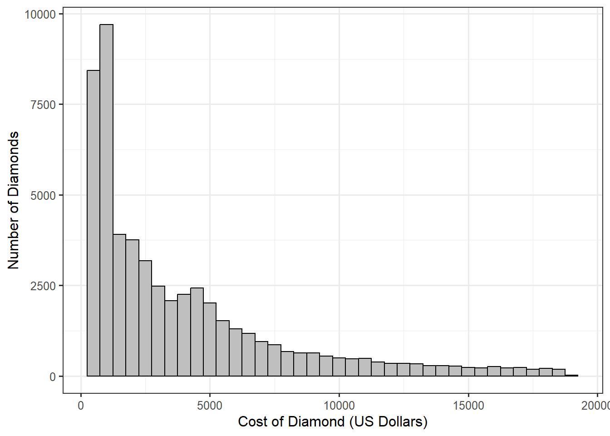

3 Sampling Distribution of a Statistic
In the previous chapter, we related probability concepts associated with random variables to their statistical counterparts in data collection. We introduced the idea of using a density function as a model of the distribution of a variable within the population. This led to the observation that the population parameters govern the shape of these density functions. Further, these parameters are the focal point of research objectives. In a statistical analysis, the parameters would be estimated using statistics; in this chapter, we explore how probability theory helps us to characterize the variability in these statistics — which is the key component of statistical inference.
3.1 Statistics and Expectations
The goal of statistics is to use a sample to say something about the underlying population. Consider the following research objective:
Estimate the cost (in US dollars) of a diamond for sale in the United States.
No researcher would believe that measuring the cost of a single diamond would be sufficient to address the above research objective. Instead, we would consider taking a sample of \(n\) diamonds and measuring the cost of each. We can represent the cost we will record (note the use of the future tense) as \(X_1, X_2, \dotsc, X_n\), where \(X_i\) is the cost of the \(i\)-th diamond we will measure. Collecting data on a sample requires that we deal with at least \(n\) random variables (one measurement for each of the observations in our sample).
In almost every analysis, we compute a numerical summary of the data. For example, the sample mean takes the form
\[\bar{x} = \frac{1}{n} \sum_{i=1}^{n} x_i.\]
Note
While a capital letter denotes a random variable (not yet observed), the corresponding lowercase letter is used to denote a past observation (which is no longer random).
These numerical summaries, statistics, are functions of the data. So, prior to when we collect that data, our statistics are functions of random variables.
Definition 3.1 (Statistic) A statistic is a numerical summary of a sample; it is a function of the data alone. Prior to collecting data, a statistic is a function of the data to be collected.
Definition 3.1 eliminates the possibility of the statistic being a function of the underlying parameters; certainly, the behavior of the statistic is determined by the parameters, but the computation of a statistic should not require knowledge of the parameter once the data is collected.
Definition 3.1 highlights the need to study functions and combinations of random variables. If you recall, Theorem 2.1 introduced the idea of expectation as a linear operator. The result, for a single random variable, is nearly intuitive. If expectation is associated with integration (as defined in Definition 2.6), then expectations should adopt the properties of integration, including linearity. The generalization of this result is extremely important within statistics.
Theorem 3.1 (Linearity of Expectations) For random variables \(X_1, X_2, \dotsc, X_n\), constants \(a_1, a_2, \dotsc, a_n\) and real-valued functions \(g_1, g_2, \dotsc, g_n\), we have that
\[E\left[\sum_{i=1}^{n} a_i g\left(X_i\right)\right] = \sum_{i=1}^{n} a_i E\left[g\left(X_i\right)\right].\]
The importance of Theorem 3.1 is seen in determining the expectation of the sample mean.
Example 3.1 (Mean of the Sample Mean) Let \(X_1, X_2, \dotsc, X_n\) be random variables representing observations from a sample that will be collected. Define the sample mean of that future sample to be
\[\bar{X} = \frac{1}{n} \sum_{i=1}^{n} X_i.\]
Determine \(E\left(\bar{X}\right)\).
Before addressing the prompt in Example 3.1, we note that before collecting the data, statistics, like the sample mean, is a function of random variables and is therefore itself a random variable! And, all random variables have distributions, and they have parameters that govern the shape of that distribution. Example 3.1 is focused on the mean of the distribution.
Solution. Applying Theorem 3.1, we have
\[ \begin{aligned} E\left(\bar{X}\right) &= E\left(\frac{1}{n} \sum_{i=1}^{n} X_i\right) \\ &= \frac{1}{n} \sum_{i=1}^{n} E\left(X_i\right) \end{aligned} \]
If we assume that each \(X_i\) is taken from the same population, then \(E\left(X_i\right) = \mu\), the population mean, for some constant \(\mu\). Therefore, we have that
\[E\left(\bar{X}\right) = \frac{1}{n} \sum_{i=1}^{n} \mu = \mu.\]
Theorem 3.1 discusses how expectations work with linear combinations; we have a similar result for variances. However, there is a particular caveat.
Theorem 3.2 (Variance of the Sum of Independent Random Variables) Let \(X_1, X_2, \dotsc, X_n\) be independent random variables, and define constants \(a_1, a_2, \dotsc, a_n\) and real-valued functions \(g_1, g_2, \dotsc, g_n\). Then,
\[Var\left[\sum_{i=1}^{n} a_i g\left(X_i\right)\right] = \sum_{i=1}^{n} a^2_i Var\left[g\left(X_i\right)\right].\]
Comparing Theorem 3.1 to Theorem 3.2, we see that while the expectation always move through sums, the variance only does so when the random variables are independent.
Definition 3.2 (Independence) Random variables \(X_1, X_2, \dotsc, X_n\) are said to be mutually independent (or just “independent”) if and only if
\[Pr\left(X_1 \in A_1, X_2 \in A_2, \dotsb, X_n \in A_n\right) = \prod_{i=1}^{n} Pr\left(X_i \in A_i\right),\]
where \(A_1, A_2, \dotsc, A_n\) are arbitrary sets.
Note
For those not familiar, \(\prod_{i=1}^n a_i\) is the product operator. It is analogous to \(\sum_{i=1}^{n} a_i\), but uses products instead of sums.
Essentially, a random variable \(X\) is said to be independent of \(Y\) if the likelihood that \(X\) takes a particular value is the same regardless of the value \(Y\) takes.
Consider taking a sample of \(n\) diamonds to address our above research objective. It seems reasonable that the cost of one diamond does not depend on the cost of another. That allows us to assume the values we collect will be independent; that is, the random variables we use to represent these costs are independent of one another. It also seems natural to assume that each diamond we select comes from the same underlying population. These two attributes together form the basis of what we mean by a “random sample.”
Definition 3.3 (Random Sample) A random sample of size \(n\) refers to a collection of \(n\) random variables \(X_1, X_2, \dotsc, X_n\) such that the random variables are mutually independent, and the distribution of each random variable is identical.
We say \(X_1, X_2, \dotsc, X_n\) are independent and identically distributed, abbreviated IID. We might also write this as \(X_i \stackrel{\text{IID}}{\sim} f\) for some density \(f\).
Warning
Let \(X\) and \(Y\) be identically distributed random variables. This does not mean that \(X = Y\). That is, the two random variables need not take on the same value. Instead, identically distributed means the density function of the two random variables are the same. As a result, they share the same mean, variance, etc. That is, their distributions are the same, not their value.
Example 3.2 (Variance of the Sample Mean) Let \(X_1, X_2, \dotsc, X_n\) be a random sample of size \(n\) from a population with a variance of \(\sigma^2\). Define the sample mean of that future sample to be
\[\bar{X} = \frac{1}{n} \sum_{i=1}^{n} X_i.\]
Determine \(Var\left(\bar{X}\right)\).
Solution. Since \(X_1, X_2, \dotsc, X_n\) form a random sample; we know that they are mutually independent. Therefore, Theorem 3.2 gives
\[ \begin{aligned} Var\left(\bar{X}\right) &= Var\left(\frac{1}{n} \sum_{i=1}^{n} X_i\right) \\ &= \frac{1}{n^2} \sum_{i=1}^{n} Var\left(X_i\right) \\ &= \frac{1}{n^2} \sum_{i=1}^{n} \sigma^2 \\ &= \sigma^2 / n. \end{aligned} \]
Warning
It is important to remember that Example 3.1 and Example 3.2 describe the mean and variance of the sample mean prior to collecting data. Once the data is collected, the sample mean has no distribution. Once the data is collected, a statistic is simply a number.
There is one additional result for independent random variables that we should keep in mind.
Definition 3.4 (Expectation of a Product of Independent Random Variables) Let \(X_1, X_2, \dotsc, X_n\) be independent random variables, then
\[E\left(\prod_{i=1}^n X_i\right) = \prod_{i=1}^{n} E\left(X_i\right).\]
3.2 Sampling Distribution of Sample Mean
Together, Example 3.1 and Example 3.2 characterize the center and spread of the distribution of the sample mean. Since each statistic is a random variable, it has a distribution, and we call that distribution a sampling distribution.
Definition 3.5 (Sampling Distribution) The distribution of a statistic across repeated samples.
Note that Definition 3.5 makes use of the idea of repeated sampling. Once again, this leans on the frequentist interpretation of probability (Definition 1.5). We are thinking of the distribution of a statistic as the result of the different values that could potentially be observed if we were to repeatedly take samples of the same size.
While Theorem 3.1 and Theorem 3.2 allowed us to characterize the sampling distribution of the sample mean, these results did not provide information about the shape of the sampling distribution, much less provide a functional form of the density. To make progress on this front, we return to another tool introduced in a probability course — the moment-generating function.
Definition 3.6 (Moment-Generating Function (MGF)) For a random variable \(X\), let \(M_X(t)\) be defined as
\[M_X(t) = E\left(e^{tX}\right).\]
If \(M_X(t)\) is defined for all values of \(t\) in some interval about 0, then \(M_X(t)\) is called the moment-generating function (MGF) of \(X\).
Note
When we are working with multiple random variables, it is common to use a subscript to denote the random variable we are referencing. For example, \(F_X\) may represent the CDF of the random variable \(X\), \(f_Y\) denote the density function of the random variable \(Y\), and \(M_Z(t)\) denote the MGF of the random variable \(Z\).
First, we note that the MGF is a function, but not a function of the random variable. That is, \(M_X(t)\) is not a random variable since it is the result of taking the expected value of a random variable. Second, the definition does not guarantee the existence of the MGF for any particular random variable. That is, there are distributions for which the MGF is not defined. The power of the MGF is summarized in ?thm-mgf-properties.
3.3 Properties of the Moment-Generating Function
Let \(X\) be a random variable with moment-generating function \(M_X(t).\) Then, we have that
- \(E\left(X^k\right) = M_X^{(k)}(0)\) for all integers \(k\), where \(M_X(k)(0)\) is the \(k\)-th derivative of \(M_X(t)\) evaluated at \(t = 0\).
- The MGF uniquely defines the random variable. That is, if two random variables have the same MGF, then those random variables have the same density function.
Consider again our sample of \(n\) diamonds; let’s assume it is a random sample from the population. Suppose we are interested in the total number of diamonds within this sample that have a “princess” cut. Define the random variable
\[Y_i = \begin{cases} 1 & \text{if i-th diamond has a princess cut} \\ 0 & \text{otherwise}. \end{cases}\]
If we are intersted in the total number of diamonds within the sample that have a princess cut, we are interested in the statistic \(\sum_{i=1}^{n} Y_i\). We can use ?thm-mgf-properties, together with our previous results about expectations to derive the sampling distribution of this statistic.
Example 3.3 (Sampling Distribution of a Sum of Bernoulli Random Variables) Let \(Y_1, Y_2, \dotsc, Y_n\) be IID random variables from a Bernoulli distribution with probability \(\theta\). Define
\[Z = \sum_{i=1}^{n} Y_i,\]
the total number of “successes” in the random sample. Determine the sampling distribution of \(Z\).
Solution. In order to determine the distribution of \(Z\), we find its MGF.
\[ \begin{aligned} M_Z(t) &= E\left(e^{tZ}\right) \\ &= E\left(e^{t\sum_{i=1}^{n} Y_i}\right) \\ &= E\left(\prod_{i=1}^{n} e^{tY_i}\right), \end{aligned} \]
where the third line results from recognizing that the product of exponential terms is the exponential of the sum of the powers. Now, applying ?thm-product-expectation, we have
\[ \begin{aligned} M_Z(t) &= \prod_{i=1}^{n} E\left(e^{tY_i}\right) \\ &= \prod_{i=1}^{n} M_{Y_i}(t) \\ &= \prod_{i=1}^{n} M_{Y_1}(t) \end{aligned} \]
where the last line is the result of the random variables being identically distributed. Since they have the same distribution, they must have the same MGF’s; therefore, \(M_{Y_i}(t) = M_{Y_1}(t)\) for each \(i\). Again, we are not saying \(Y_i = Y_1\); we are saying the moment-generating functions of these random variables is equivalent.
Consulting a table to determine the MGF of a Bernoulli random variable, we have that
\[M_{Y_1}(t) = (1 - \theta) + \theta e^t.\]
Thus, we have that
\[ \begin{aligned} M_Z(t) &= \prod_{i=1}^{n} M_{Y_1}(t) \\ &= \left[M_{Y_1}(t)\right]^n \\ &= \left[(1 - \theta) + \theta e^{t}\right]^n. \end{aligned} \]
But, consulting a table of common distributions, we recognize \(M_Z(t)\) as the moment-generating function of a Binomial distribution with parameters \(n\) and \(\theta\). Since moment-generating functions uniquely define a distribution when they exist, we have that \(Z \sim Bin(n, \theta)\).
The next chapter will illustrate how we can capitalize on this information. For this chapter, we simply note that we are able to characterize how the sum of Bernoulli random variables behaves. We note that this sampling distribution depends on the unknown parameter \(\theta\) that also governs the underlying population. In addition, it depends on the sample size.
Big Idea
The sampling distribution of a statistic depends on both the parameters from the underlying population as well as the sample size.
While the previous example illustrates the process, we admit that it simply reiterates a fact that we already knew (and noted in Definition 2.12). The utility of the next result may be a bit more apparent.
Example 3.4 (Sampling Distribution of the Sample Mean from a Normal Population) Let \(Y_1, Y_2, \dotsc, Y_n \stackrel{\text{IID}}{\sim} N\left(\mu,\sigma^2\right)\). Define
\[\bar{Y} = \frac{1}{n}\sum_{i=1}^{n} Y_i,\]
the sample mean. Determine the sampling distribution of \(\bar{Y}\).
Solution. In order to determine the distribution of \(\bar{Y}\), we find its MGF.
\[ \begin{aligned} M_{\bar{Y}}(t) &= E\left(e^{t\bar{Y}}\right) \\ &= E\left(e^{tn^{-1}\sum_{i=1}^{n} Y_i}\right) \\ &= E\left(\prod_{i=1}^{n} e^{tn^{-1}Y_i}\right) \end{aligned} \]
where the third line results from recognizing that the product of exponential terms is the exponential of the sum of the powers. Now, applying ?thm-product-expectation, we have
\[ \begin{aligned} M_{\bar{Y}}(t) &= \prod_{i=1}^{n} E\left(e^{tn^{-1}Y_i}\right) \\ &= \prod_{i=1}^{n} M_{Y_i}(t/n) \\ &= \prod_{i=1}^{n} M_{Y_1}(t/n) \end{aligned} \]
where the last line is the result of the random variables being identically distributed, and the second line makes use of the definition of the MGF, which can be evaluated at any value, including \(t/n\). Since they have the same distribution, they must have the same MGF’s; therefore, \(M_{Y_i}(t) = M_{Y_1}(t)\) for each \(i\) and all \(t\). Again, we are not saying \(Y_i = Y_1\); we are saying the moment-generating functions of these random variables is equivalent.
Consulting a table to determine the MGF of a Normal random variable, we have that
\[M_{Y_1}(t) = e^{\mu t + (1/2) \sigma^2 t^2}.\]
Thus, we have that
\[ \begin{aligned} M_{\bar{Y}}(t) &= \prod_{i=1}^{n} M_{Y_1}(t/n) \\ &= \left[M_{Y_1}(t/n)\right]^n \\ &= \left[e^{\mu t/n + (1/2) \sigma^2 t^2/n^2}\right]^n \\ &= e^{\mu t + (1/2)(\sigma^2 / n) t^2}. \end{aligned} \]
But, consulting a table of common distributions, we recognize \(M_{\bar{Y}}(t)\) as the moment-generating function of a Normal distribution with a mean of \(\mu\) and a variance of \(\sigma^2/n\). Since moment-generating functions uniquely define a distribution when they exist, we have that \(\bar{Y} \sim N\left(\mu, \sigma^2/n\right)\).
We note a difference between Example 3.3 and Example 3.4. In Example 3.3, the statistic we examined did not estimate a parameter of interest. While there is nothing wrong with examining the total number of diamonds in a sample, the statistic itself is dependent on the sample size — we would expect a larger value with larger samples. In Example 3.4, however, the sample mean is a common estimate of the population mean. It turns out the sampling distributions of most estimators (statistics chosen to estimate a parameter) tend to share similar characteristics.
Common Characteristics of Sampling Distributions
While not guaranteed, the sampling distribution of many statistics tend to have the following characteristics:
- The sampling distribution is centered on the corresponding parameter of interest, or the center approaches the corresponding parameter as the sample size increases.
- The spread of the sampling distribution is smaller than within the population, and the spread decreases as the sample size increases.
- The shape of the sampling distribution differs from that of the underlying population, and the sampling distribution becomes more bell-shaped as the sample size increases.
Of the three characteristics above, the third is the one most likely to be broken.
Considering Example 3.4, we see that all three characteristics hold. First, we see (as we also saw in Example 3.1) that the expected value of the sample mean is the population mean. When this occurs, we say the estimator is unbiased.
Definition 3.7 (Unbiased) An estimator (statistic) \(\widehat{\theta}\) is said to be unbiased for the parameter \(\theta\) if
\[E\left(\widehat{\theta}\right) = \theta.\]
While being unbiased is a good quality in an estimator, it is not required. For example, the sample standard deviation is not an unbiased estimator of the population standard deviation, yet it is still a preferred estimator.
In Example 3.4, we see that variance of the sample mean is smaller than the variance of the population by a factor of \(n\); therefore, as the sample size increases, the variability of the sample mean decreases. This implies that the sample mean of a large sample will tend not to stray as far from the population mean as that of a smaller sample. This is where the notion of “more data is better” comes from.
Big Idea
Larger samples result in more reliable statistics.
Finally, we see in Example 3.4 that the sampling distribution of the sample mean is a Normal distribution, which is bell-shaped. Again, being bell-shaped is not necessarily more advantageous than any other distribution, but it reinforces the idea that the statistic tends to be near the parameter of interest across repeated sampling.
Warning
Remember, these discussions are about the distribution of a statistic across repeated samples, and so they apply prior to collecting data. Once we have a sample, the statistic does not have a distribution.
Example 3.4 is a really nice result because it tells us the behavior of a popular statistic; unfortunately, it only applies to a sample from a population which follows a Normal distribution. More, it only applies when the population variance is known, which rarely happens in practice. Theorem 3.3 generalizes the results to the case when the population variance is unknown.
Theorem 3.3 (Student’s Theorem) Let \(Y_1, Y_2, \dotsc, Y_n \stackrel{\text{IID}}{\sim} N\left(\mu,\sigma^2\right)\). Define
\[\bar{Y} = \frac{1}{n}\sum_{i=1}^{n} Y_i\]
to be the sample mean and
\[S^2 = \frac{1}{n-1} \sum_{i=1}^{n} \left(Y_i - \bar{Y}\right)^2\]
to be the sample variance. Then,
\[\frac{\sqrt{n}\left(\bar{Y} - \mu\right)}{S} \sim t_{n-1}.\]
To see the impact of estimating the population variance, we recognize that Example 3.4 gave us that when the population variance is known
\[\bar{Y} \sim N\left(\mu, \sigma^2/n\right),\]
which can be rewritten as
\[\frac{\sqrt{n}\left(\bar{Y} - \mu\right)}{\sigma} \sim N(0, 1).\]
Therefore, when the population variance is estimated (using the typical sample variance), we have that the sampling distribution of this standardized ratio follows a t-distribution instead of a Standard Normal distribution.
Theorem 3.3 highlights that we often characterize the distribution of some “standardized statistic” (instead of the statistic that estimates the parameter directly). Exact results like Example 3.4 and Theorem 3.3 are quite rare. It is more common for us to rely on approximations to the sampling distribution, the most famous of which is the Central Limit Theorem.
Theorem 3.4 (Central Limit Theorem (CLT)) Let \(X_1, X_2, \dotsc, X_n\) be IID random variables such that \(E\left(X_i\right) = \mu\) and \(Var\left(X_i\right) = \sigma^2\) for all \(i\). As \(n\) approaches infinity, the ratio
\[\frac{\sqrt{n}\left(\bar{X} - \mu\right)}{S}\]
behaves like a Standard Normal random variable. That is,
\[Pr\left(\frac{\sqrt{n}\left(\bar{X} - \mu\right)}{S} \leq q\right) \rightarrow Pr(Z \leq q) \qquad \text{as } n \rightarrow \infty\]
where \(q\) is any real number, \(Z \sim N(0, 1)\), \(\bar{X}\) is the sample mean and \(S^2\) is the sample standard deviation.
Note
“The” Central Limit Theorem is a misnomer; there are actually several Central Limit Theorems which differ in their assumptions. The one most commonly presented in texts uses the population standard deviation \(\sigma\) instead of the sample standard deviation \(S\) as we have presented it. The more common presentation is easier to prove, but it is far less useful in practice (as the population variance is rarely known). The proof of the version we have presented is beyond the scope of the course but is more useful in practice.
Known as a “limit” (or “asymptotic”) result, Theorem 3.4 provides an approximation to the sampling distribution. That is, the CLT states that as the sample size gets large, the Standard Normal distribution is a good approximation to the true sampling distribution of this standardized statistic. Of course, that begs the question, “how good is the approximation?” as well as “how large of a sample is large enough?” While we can never address these questions with certainty, there are some graphical techniques for assessing these questions in practice.
The huge draw of the CLT is that it applies under vary weak conditions — the underlying population has a finite mean and variance. For nearly any population, we have an approximation for the sampling distribution of the sample mean.
Note
The above methods describe the actual sampling distribution. Of course, because these describe how a statistic behaves across repeated samples, this is not something we get to observe directly. Instead, the sampling distribution must be modeled. This is often done by replacing the parameters in the sampling distribution with the corresponding estimates from the sample. Therefore, the model for the sampling distribution based on a given sample is really capturing the shape and spread of the sampling distribution.
3.4 Bootstrapping
In the above sections, we have discussed analytical methods (both exact and approximation through limit theorems) for the sampling distribution. Given a set of data, we can also construct a model for the sampling distribution empirically. As there is no single Central Limit Theorem, there is no single bootstrapping algorithm. Instead, “bootstrapping” refers to the idea of using resampling methods to model a sampling distribution of a statistic, but the easiest algorithm is defined below.
Definition 3.8 (Case-Resampling Bootstrap) Let \(Y_1, Y_2, \dotsc, Y_n\) be a random sample from an underlying population, and let \(\theta\) represent a parameter of interest characterizing the underlying population. Further, define \(\widehat{\theta} = h(\mathbf{Y})\) be a statistic which estimates the parameter. The case-resampling bootstrap algorithm proceeds as follows:
- Take a random sample, with replacement, from the set \(\left\{Y_1, Y_2, \dotsc, Y_n\right\}\) of size \(n\). Call these values \(Y_1^*, Y_2^*, \dotsc, Y_n^*\). This is known as a bootstrap resample.
- Compute \(\widehat{\theta}^* = h\left(\mathbf{Y}^*\right)\) and store this value. This is known as a bootstrap statistic.
- Repeat steps 1-2 \(m\) times, for some large value of \(m\) (say \(m = 5000\)). Denote \(\widehat{\theta}^*_j\) to be the bootstrap statistic from the \(j\)-th bootstrap resample.
The empirical distribution of \(\widehat{\theta}_1^*, \widehat{\theta}_2^*, \dotsc, \widehat{\theta}_m^*\) will approximate the shape and spread of the sampling distribution of the statistic \(h(\mathbf{Y})\).
While the proof of the efficacy of a bootstrap algorithm is beyond the scope of this text, we can gain some intuition regarding the process. Let’s start by characterizing the distribution from which the algorithm resamples — the distribution of the sample. When we sample, with replacement, from the original sample, only \(n\) values are possible \(\left(Y_1, Y_2, \dotsc, Y_n\right)\). And, each value will be selected with probability \(1/n\). That is, we have that
\[Pr\left(Y_i^* = u\right) = \frac{1}{n} \qquad u \in \left\{Y_1, Y_2, \dotsc, Y_n\right\}.\]
The mean of this distribution is represented by
\[\bar{Y} = \frac{1}{n} \sum_{i=1}^{n} Y_i,\]
and the variance of this distribution is
\[S^2_n = \frac{1}{n} \sum_{i=1}^{n} \left(Y_i - \bar{Y}\right)^2.\]
We divide by \(n\) instead of \(n - 1\) because since we are treating the original sample as a population from which to be sampled, we rely on the formulas from Chapter 2.
If \(\widehat{\theta} = \bar{Y}\), then we have that the sampling distribution of \(\widehat{\theta}^* = n^{-1}\sum_{i=1}^{n} Y_i^*\) will have a mean of
\[E\left[\frac{1}{n} \sum_{i=1}^{n} Y_i^*\right] = \bar{Y}\]
and a variance of
\[Var\left[\frac{1}{n} \sum_{i=1}^{n} Y_i^*\right] = \frac{S_n^2}{n}.\]
These are the direct application of Example 3.1 and Theorem 3.2. And, if \(n\) is large enough, we would expect the resulting empirical distribution to approximate that of a Normal distribution as a result of the CLT. This highlights that models of the sampling distribution tend to have similar characteristics to that of sampling distributions.
Common Characteristics of Models for Sampling Distributions
While not guaranteed, the model of a sampling distribution of many statistics tend to have the following characteristics:
- The model of the sampling distribution is centered on the statistic from the original sample, or the center of the model approaches the statistic from the original sample as the sample size increases.
- The spread of the model of the sampling distribution is smaller than within the sample, and the spread decreases as the sample size increases.
- The shape of the model of the sampling distribution differs from that of the sample, and the model of the sampling distribution becomes more bell-shaped as the sample size increases.
Of the three characteristics above, the third is the one most likely to be broken.
3.5 Application
Consider the following research objective:
Estimate the cost (in US dollars) of a diamond for sale in the United States.
As stated, this is an ill-posed objective as it is not centered on a parameter. We might refine it to be
Estimate the average cost (in US dollars) of a diamond for sale in the United States.
We have a large (\(n = 53940\)) sample of diamonds at our disposal that can be used to address this research objective. A plot of the sample is shown in Figure 3.1.
Using the sample, we conduct 5000 bootstrap replications, each time computing the sample mean. The bootstrap sampling distribution is shown in Figure 4.3. We have overlayed the model suggested by the CLT as well. Observe that even though the sample was skewed to the right, the model for the sampling distribution is bell-shaped. The center of our model is the observed sample mean of 3933, and the spread of the sampling distribution is much smaller than that observed in the sample. With a large sample size, we see that the empirical model of the sampling distribution is very similar to that suggested by the CLT.
Note
Bootstrapping can be used to qualitatively assess whether the CLT is appropriate for a particular sample. Of course, if we have gone through the effort of constructing an empirical model, we would likely rely on the empirical model.
Figure 4.3 does not include the results from Theorem 3.3; the rationale for excluding this result is that a quick glance at Figure 3.1 is enough to convince us that the underlying population does not follow a Normal distribution; therefore, those results are inappropriate.

The next chapter considers ways of using the above tools to perform inference.